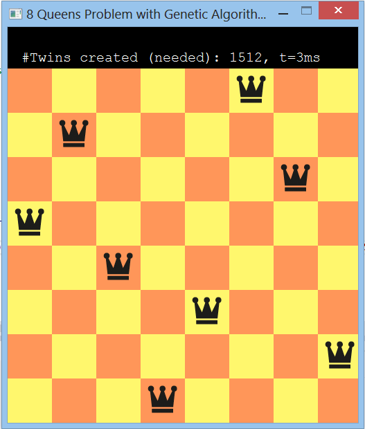
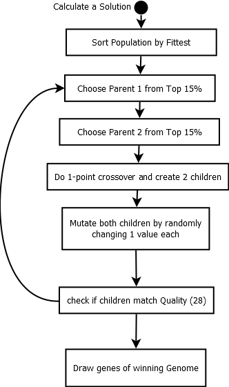
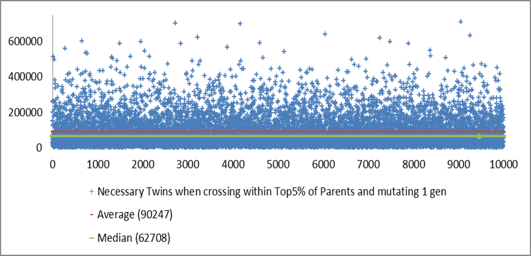
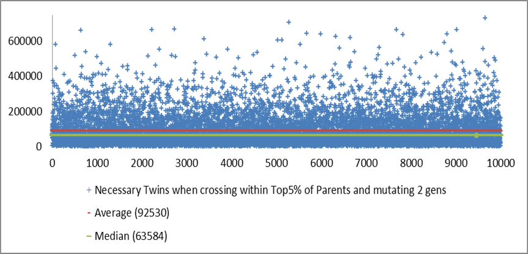
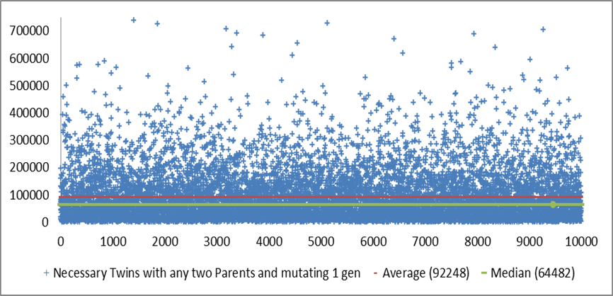

Damenproblem by David Pertiller
In dieser Übung wurde das „8 Damenproblem“ mit Hilfe eines genetischen Algorithmus gelöst. Hierbei gilt es, 8 Damen auf einem 8x8 Brett so anzuordnen, dass sich keine der Damen weder horizontal, vertikal noch diagonal schlägt. Dazu wurde eine Population bestehend aus 1000 Genomen erstellt und pro Durchgang 2 vielversprechende Genome (die sich möglichst wenig schlagen) ausgesucht und aus deren Kreuzung 2 Nachkommen erzeugt und in weiter Folge mutiert. Die Kinder ersetzen daraufhin ihre Eltern, wodurch bezweckt bzw. versucht wird, die Lösungsgüte stets zu verbessern.

Es gibt einen manuellen und einen automatischen Modus
int collisions = 0;
for(int i = 0; i < n; ++i) //compare every gene with every other for collisions
{
for(int j = i+1; j < n; ++j) //we don't need to compare backwards too, just forward
{
int dist = abs(Genes[i]-Genes[j]);
//a collision occurs if 2 genes are on the same row OR
//the absolute distance between the genes matches their grid distance
if( dist == 0 || dist == j-i)
++collisions;
}
}

Die folgenden Diagramme zeigen, wie viele Nachkommen erzeugt werden mussten, um eine Lösung zu erhalten. Um mehr statistische Aussagekraft über die Effizienz der jeweiligen Einstellungsart zu erhalten, wurden 10.000 Lösungen generiert (in der x-Achse aufgetragen). Die Anzahl der benötigten Zwillinge (y-Achse) wird zum jeweiligen Durchgang aufgetragen:

Diagramm 1: Nachkommen (Zwillinge) wurden nur aus den 5% fittesten Eltern erzeugt. Es wurde lediglich 1 Gen mutiert. Die durchschnittlich benötigte Anzahl von Zwillingen beträgt 90247.

Diagramm 2: Nachkommen (Zwillinge) wurden nur aus den 5% fittesten Eltern erzeugt. Es wurden pro Kind 2 Gene mutiert. Die durchschnittlich benötigte Anzahl von Zwillingen beträgt 92530.
Die 2 Diagramme unterscheiden sich nur durch die Anzahl der mutierten Gene. Die Gene der Kinder wurden immer zufällig mutiert: per Zufallszahlgenerator wird einer der 8 Gene ausgewählt und zufällig auf eine Zahl zwischen [0, .. 7] gesetzt.
Es zeigt sich, dass sich die zufällige Mutation von zwei Genen negativ auf die Lösungsfindung auswirkt, als wenn nur 1 Gen zufällig mutiert wird!

Diagramm 3: Nachkommen (Zwillinge) wurden aus irgendwelchen (Top 100%) Eltern erzeugt. Es wurde lediglich 1 Gen mutiert. Die durchschnittlich benötigte Anzahl von Zwillingen beträgt 92248.
Die 2 Diagramme unterscheiden sich nur durch die Auswahl der Eltern. Während beim 1. Diagramm für die Nachkommen nur die 5% besten Eltern in Frage kommen, wurde diese Spanne bei der dritten Auswertung auf die ganze Population ausgeweitet.
Es zeigt sich, dass sich die Eingrenzung auf die 5% fitteste Population im Durchschnitt ca. 2000 weniger Nachkommen bedarf um eine Lösung zu finden!